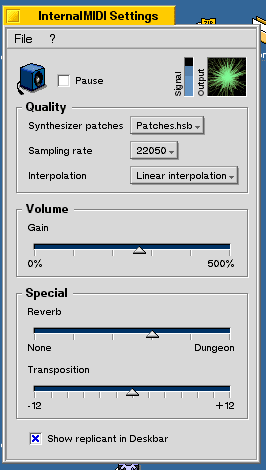

| InternalMIDI |
Introduction
InternalMIDI creates a MIDI node for the internal General MIDI synthesizer of the BeOS.
You can connect it to every BeOS MIDI program that supports the Midi2 Kit. With a nice panel you can change all the settings that the internal BeOS synthesizer accepts: Sound quality, different patches, pause, volume, reverb, and transposition.
License
InternalMIDI is freeware. You may share InternalMIDI with as many people as you like, as long as the program is distributed with all parts, especially this documentation, intact. InternalMIDI may not be sold. You may freely distribute InternalMIDI together with your own software WITHOUT the authors permisson - although I would be glad to hear from you!
All graphics, especially the icon or brands are copyrighted by the author and may not be used in any form without the author's consent.
Exclusion of liability
Great care was taken to make sure InternalMIDI functions flawlessly and without fault.
Nevertheless there is still a slim chance that errors may still occur.
The author will not be held liable for any potential damage caused by this software nor will he guarantee any unique (or special) functions.
Usage of the program

After starting InternalMIDI a small icon appears in the Deskbar.
Now you can use your MIDI software or a utility like PatchBay (by Be Inc.) to connect a MIDI input device to InternalMIDI. InternalMIDI will play every MIDI code it receives through the builtin software synthesizer.
Settings
When you right click on the Deskbar icon, a popup menu appears with the items: Settings, About and Quit. When you either select Settings from the popup menu or double-click onto the icon or click your middle mouse button, the settings window will be opened.The settings should be self-describing.
But nevertheless I've got some hints for you:
- The sliders are acting real-time as far as possible which means that you can modify the sound while dragging the knob.
- When you click the right mouse button over the sliders they are set to predefined values.
Remote control
If you want to use InternalMIDI from your own program, here are some informations for you, how you can remote control it.
Getting started
Just write in your program:
#include <Roster.h>
#define INTERNALMIDI_SIGNATURE "application/x-vnd.pecora-internal_midi"
...
if ( !be_roster->IsRunning( INTERNALMIDI_SIGNATURE ) ) {
if ( be_roster->Launch( INTERNALMIDI_SIGNATURE ) != B_OK ) {
/* some error handling */
}
}
Hint: If you want to connect to InternalMIDI immediately after starting it, you must have a little bit patience: It can take some seconds before it is running!
Open the Settings Window
The following code opens the Settings Window:
BMessage msg('Sett');
BMessenger( INTERNALMIDI_SIGNATURE ).SendMessage( &msg );
There is currently no possibility to close the Settings Window remotely.
Hide / show the Deskbar replicant
Hiding and showing the Deskbar replicant is almost as easy:
BMessage msg('Repl');
msg.AddInt32( "be:value", 1 );
BMessenger( INTERNALMIDI_SIGNATURE ).SendMessage( &msg );
The text above shows the Deskbar replicant. If you want to hide it, set the value from 1 to 0:
... msg.AddInt32( "be:value", 0 ); ...You can also leave the whole line away, but this is not guaranteed to work in the future!
Even more features...?
If you want to change more settings remotely, please contact me!History
-
For details see the BRoster documentation!
- July 26rd, 2001: V 2.5.3: Added another view which shows the incoming "Note On" signals
- May 21th, 2001: V 2.5.2: We are getting better everyday... :-) IM shouldn't crash anymore when changing patches while working heavy...
- May 19th, 2001: V 2.5.1: Now we are font-sensitive. Also added minor improvements.
- May 13th, 2001: V 2.5: Added a lot of new features:
- You can now hide the Deskbar replicant
- The settings are (automatically) saved and restored when starting InternalMIDI again
- Added a pretty scope view (click on it to change it's look!)
- May 9th, 2001: V 2.02: removed another bug which crashed IM under BeOS 5.01 - not under 5.03 where I tested it... This one almost made me crazy! Thanks to Martijn Sipkema for his hint!
- May 5th, 2001: V 2.01: removed a small bug
- May 5th, 2001: V 2.0 released: Added the settings window
- April 28th, 2001: Initial release
Future
There will be some smaller updates for this release. InternalMIDI will be used in a bigger MIDI project I'm currently developing, called PecoBeat. Just have a look at it!
Author / contact
I hope you like the program and you can benefit from it. I'm looking forward your ideas, suggestions or criticism!
And please vote for it at BeBits!
Here you can contact me:
| Werner Freytag |
| Neurieder Str. 8
82152 Martinsried Germany |
| info@pecora.de
http://www.pecora.de |